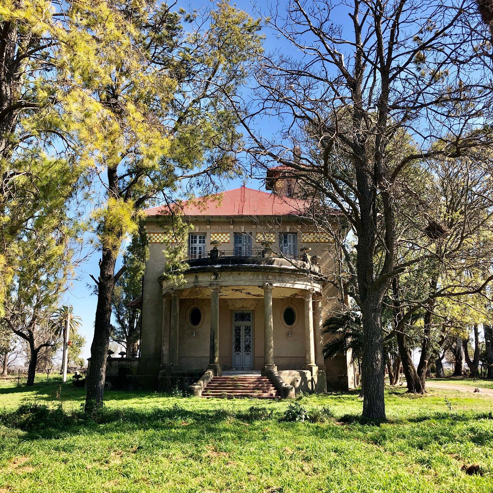
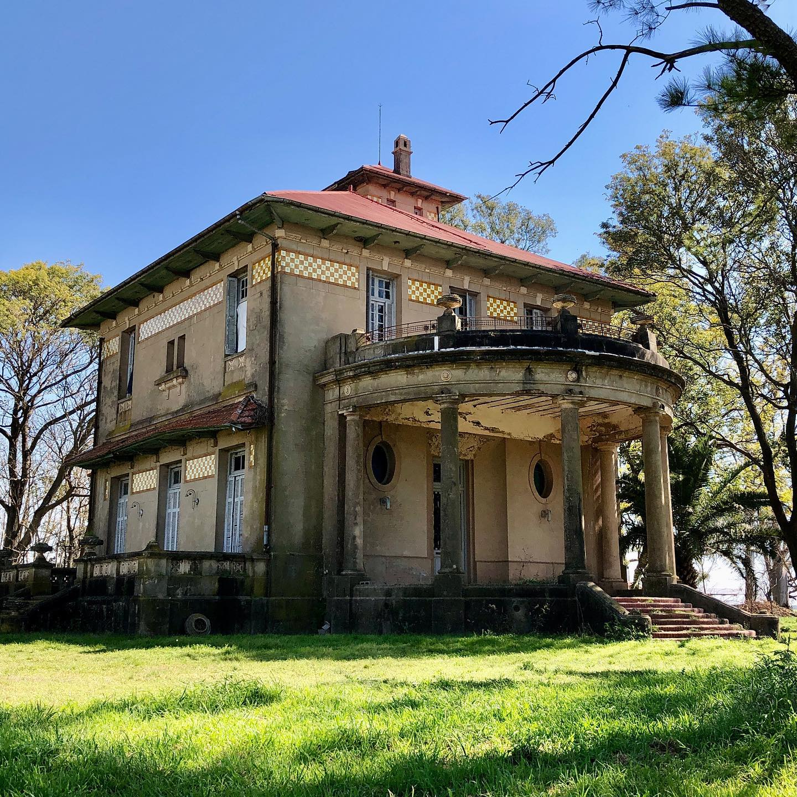

MI PRIMERA PÁGINA WEB
¡Bienvenidos a mi primera página Web!
Mí nombre es GIANFRANCO SANGALLI
Tengo 24 años, soy de un pequeño pueblo llamado Santo Domingo.
La localidad de Santo Domingo, se encuentra en el centro-noreste del Departamento Las Colonias, provincia de Santa Fe, República Argentina, a 80 km de la capital provincial. Cuenta con 1,917 habitantes.
Lugares destacados de la localidad:
CRISTO DE LA HERMANDAD:
La pieza fue tallada por el escultor Luís Sissara en el año 2010, perteneció a una viga de eucalipto colorado de 80 años.
Consta con un peso de 30 toneladas.


ESTANCIA LA ATALAYA:
Ubicada en las afueras de la localidad de Santo Domingo se encuentra el casco de lo que fue una extensión agrícola-ganadera de 1500 hectáreas.
Dicha contrucción radica del año 1910, actualmente se encuentra deshabitada.
 
PARQUE JURÁSICO:
Es un parque de dinosaurios y mamíferos de la era de hielo.
Basicamente se trata de ocho esculturas de gran tamaño, realizadas en cemento por 14 escultores de todo el país.
Para llevarlo a cabo se intervino cuidadosamente el espacio sin modificar la vegetación autóctona, ya que el siguiente paso en este proyecto es la formación de una reserva natural.
En las siguientes imágenes podremos apreciar dos de las esculturas más llamativas, la primera se trata de un GIGANOTOSAURUS, y la segunda es un DILOPHOSAURUS.